Capturing sunsets, landscapes, wildlife and the beauty of nature.
View PhotographyHi, I'm Brooke.
I'm a 13-year-old photography enthusiast from Northern Ireland with a passion for sunsets, landscapes, nature and wildlife photography.
I really appreciate the beauty of the natural world around me and I love capturing it. I belive that nature is one if the best sources of inspiration and happiness and I captue it to share it with the world. Not much people are actually interested in photography or my photos so I want to try make more people realise how beautiful the world is outside of social media.
I like to get out and explore as much as possible but school and the weather can sometimes get in the way. Most of my photos are taken with my Google Pixel 9A phone camera but I also use a Nikon coolpix B500 camera when possible.
Here are some of my favourite quotes:
"Sometimes, the hardest thing to appreciate is the life you're too exhausted to enjoy." - Anonymous
"Listen to the wind, it talks. Listen to the silence, it speaks. Listen to your heart, it knows." - Native American Proverb
"Listen to your gut not your friends" - Anonymous
“Life is not a problem to be solved, but a reality to be experienced.” — Soren Kierkegaard \
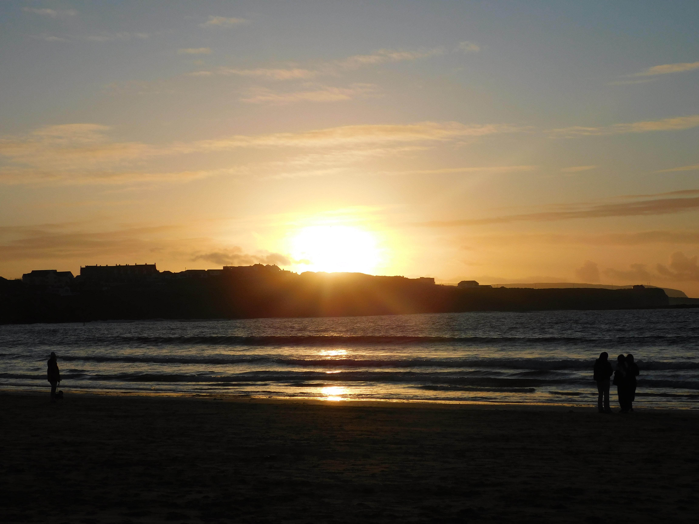
One of Brooke's favourite photographs.
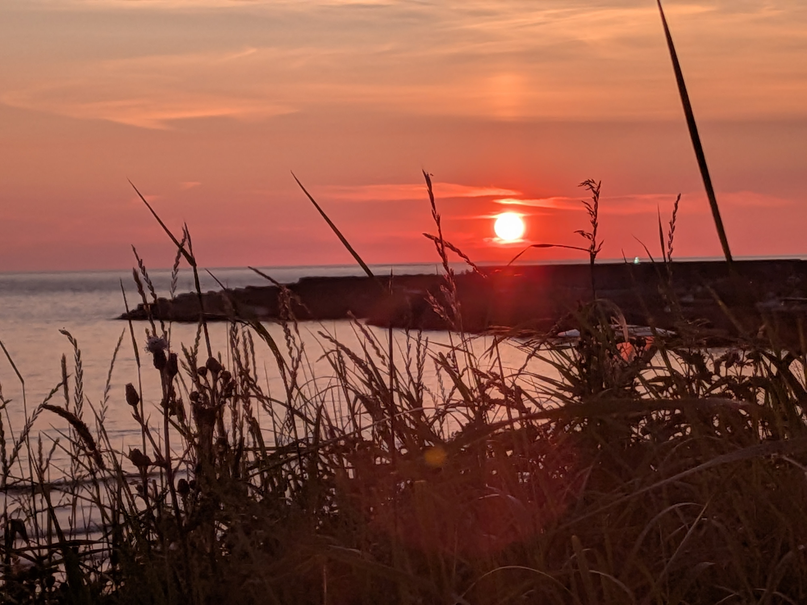
North Coast photography.
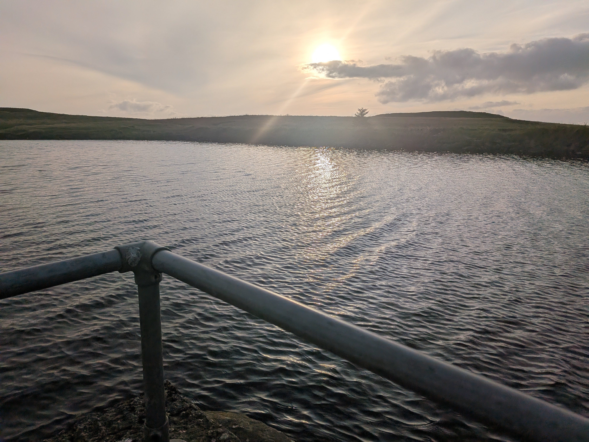
Landscape photography.
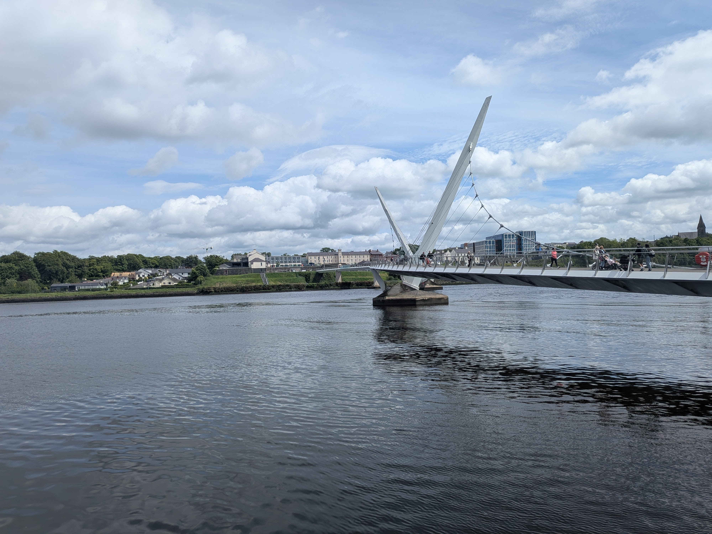
Local landmark photography.
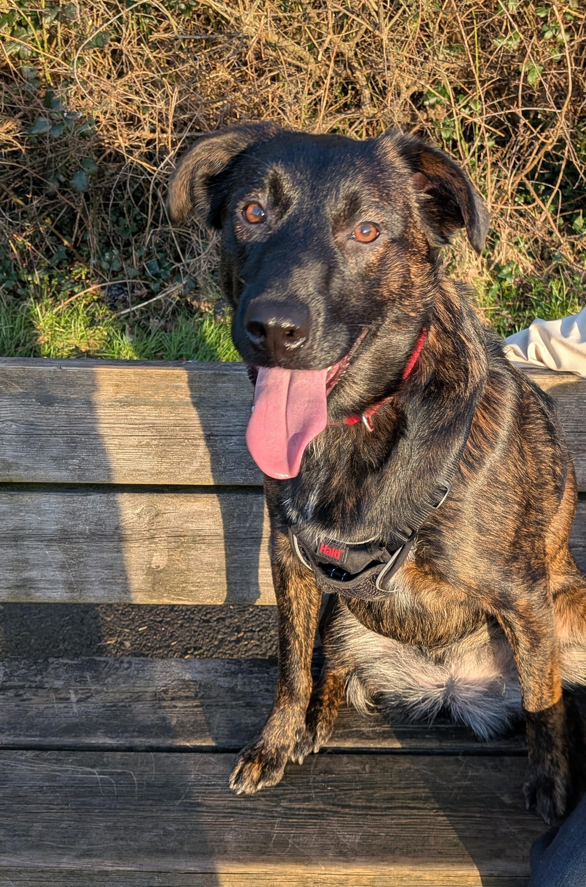
Animal photography.
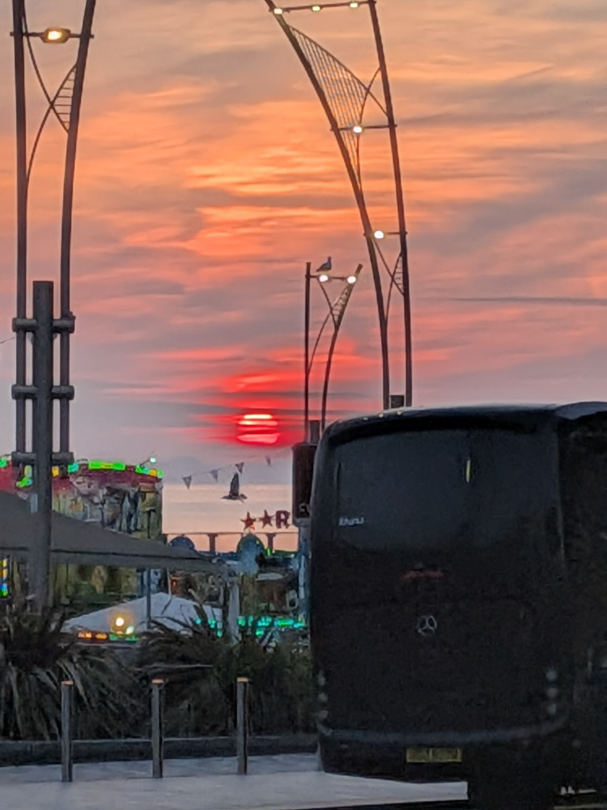
Coastal scenery.
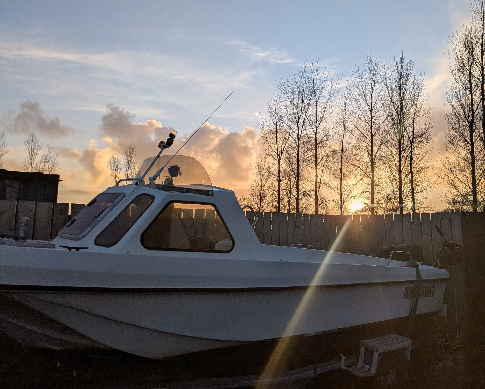
Waterfront photography.
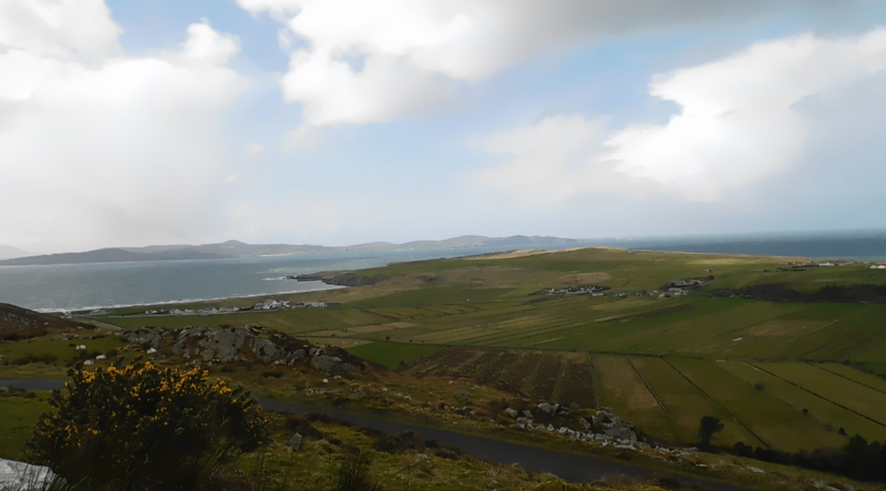
Irish landscape photography.
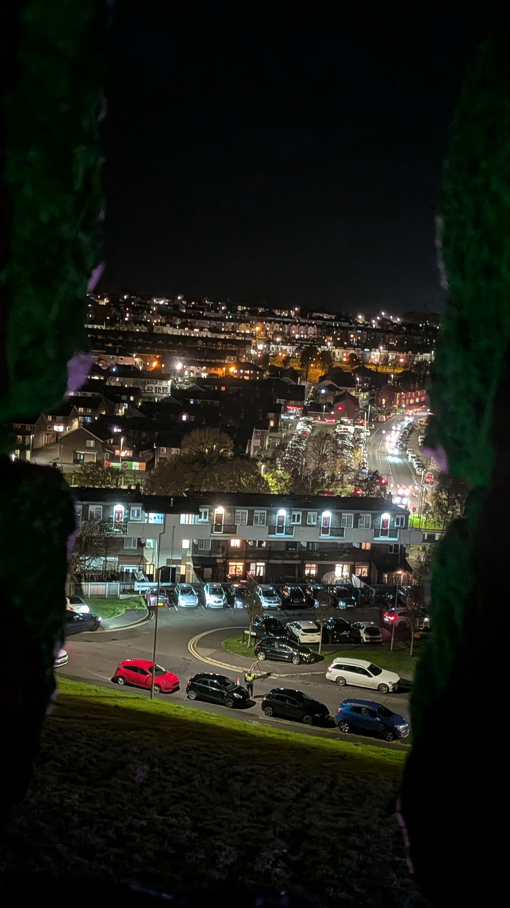
Historic architecture.
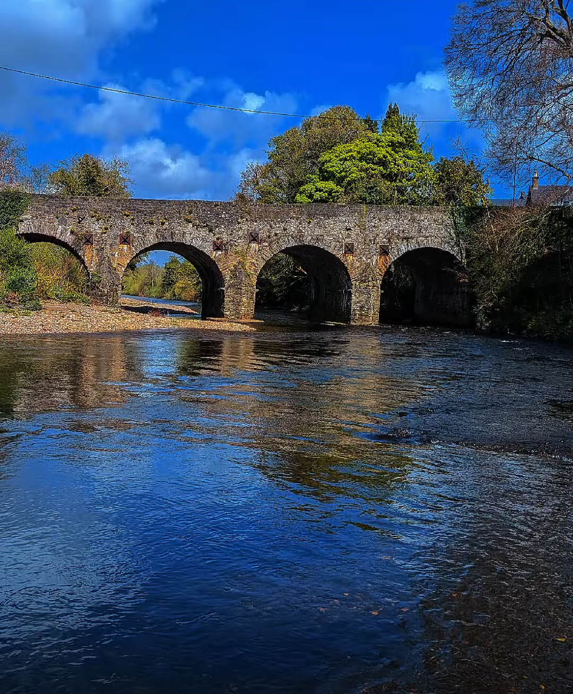
Local heritage photography.
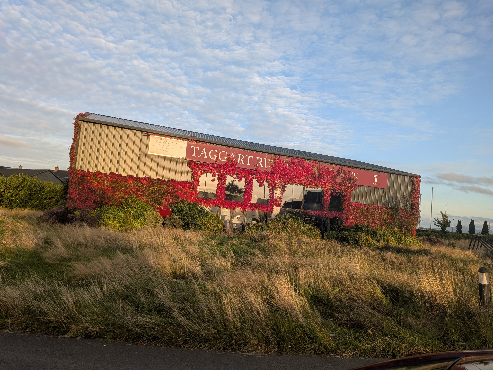
Exploring changing urban spaces.
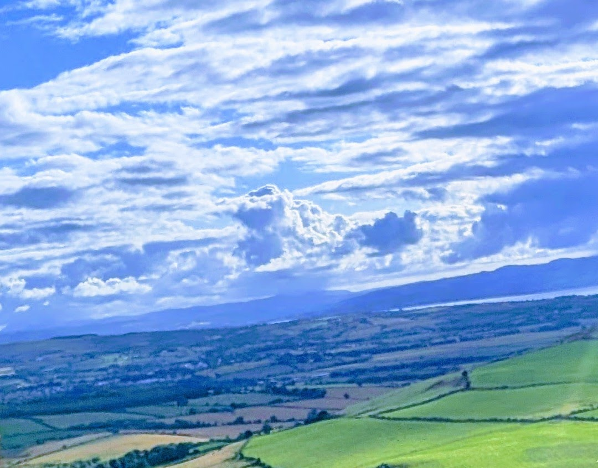
Historic Irish landscape.
Colourful evening skies and golden-hour photography.
Animals, birds and the natural environment.
Mountains, lakes, countryside and scenery.
Photography from adventures at home and abroad.
Beaches, sea views and coastal locations.
Architecture, bridges and city photography.
Thank you for visiting Brooke Jordan Photography.
More photographs and projects will be added soon.
Photographs
Collections
Countries & Regions
Future Adventures